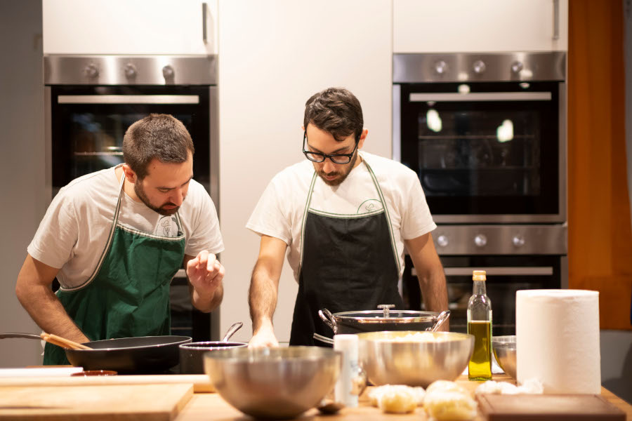
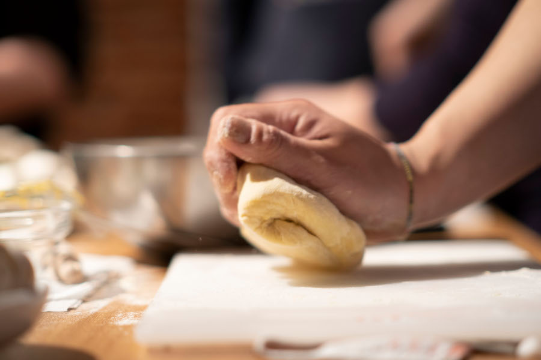

Laboratorio Signorelli è uno spazio multifunzionale che ospita persone che hanno qualcosa di interessante da dire e comunicare, in un clima dove vengono per prime le relazioni sociali
Spazio eventi
Allestiamo l'ambiente per mostre e presentazioni culturali e aziendali, corsi di formazione, incontri e feste... offrendo come servizio i nostri buffet e attività di team building con chef specializzati Animatori - chef durante un teambuilding aziendale
Set fotografici
Ospitiamo studi di produzione e creativi per riprese audiovideo
Allestimento set fotografici in cucina nell'open space. Disponiamo un ampio backstage per le esigenze di fonici, fotografi, attori
Scuola Mestieri Zeropercento
I dipendenti di Zeropercento lavorano ogni giorno in squadra con educatori e artigiani per allestire buffet e aperitivi a Milano. L’esperienza ci dice che il lavoro fatto bene e in team è una palestra formativa efficace per l'inserimento lavorativo.
Nella Scuola Mestieri Zeropercento facciamo dei corsi specifici con formatori con la giusta empatia sull’arte della caffetteria e dei cocktail, dell’allestimento e servizio in sala, della piccola panificazione e di frullati e centrifughe di frutta e verdura fresca.
Un laboratorio collettivo di cucina
Arte
Ospitiamo associazioni e artisti che lavorano sui temi dell'inclusione e della socialità attraverso le arti figurative, la musica e il racconto, costruendo insieme le proposte
Diversità e inclusione
Promuoviamo le tematiche dell'inclusione coinvolgendo aziende, cooperative e mondo accademico, attraverso il volontariato aziendale, la ricerca e la sua divulgazione, i workshop formativi
Proposte di collaborazione
Inviateci la vostra proposta o venite a trovarci in sede per parlarne direttamente
"Quando il nostro lavoro gira attorno al cibo pensiamo sempre a chi e come lavora la terra, ne raccoglie i frutti, li vende, li prepara e li serve...”